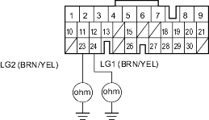
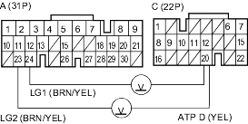
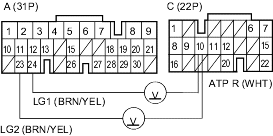

- Test the transmission range switch (see page 14-350).
Is the switch OK?
YES - Go to step 2.
NO - Replace the transmission range switch. 
- Connect the transmission range switch connector.
- Check for continuity between PCM connector terminal A23 and body ground and between terminal A24 and body ground.
PCM CONNECTOR A (31P)

Wire side of female terminals
Is there continuity?
YES - Go to step 4.
NO - Repair open in the wires between PCM connector terminals A23 and A24 and ground (G101), or repair poor ground (G101).
- Turn the ignition switch ON (II).
- Shift to
 position.
position.
- Measure the voltage between PCM connector terminals C20 and A23 or A24.
PCM CONNECTORS

Wire side of female terminals
Is there voltage?
YES - Repair open in the wire between PCM connector terminal C20 and the transmission range switch.
NO - Go to step 7.
- Shift to
 position.
position. - Measure the voltage between PCM connector terminals C10 and A23 or A24.
PCM CONNECTORS

Wire side of female terminals
Is there voltage?
YES - Repair open in the wire between PCM connector terminal C21 and the transmission range switch.
NO - Go to step 9.